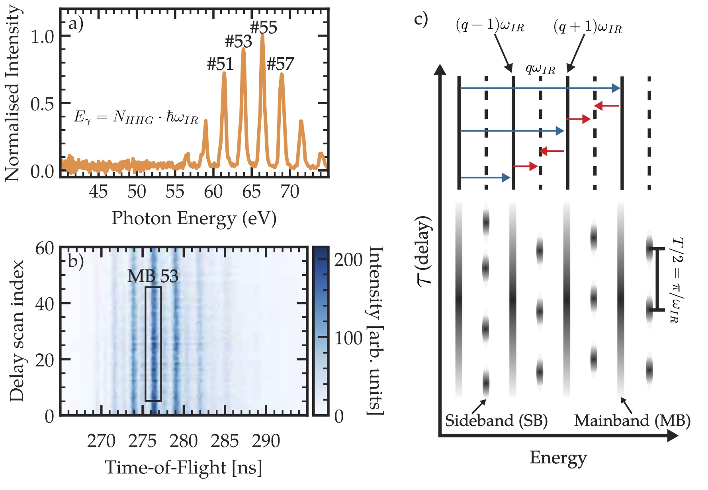
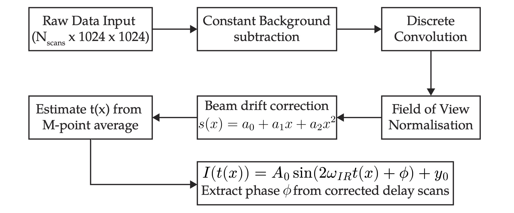
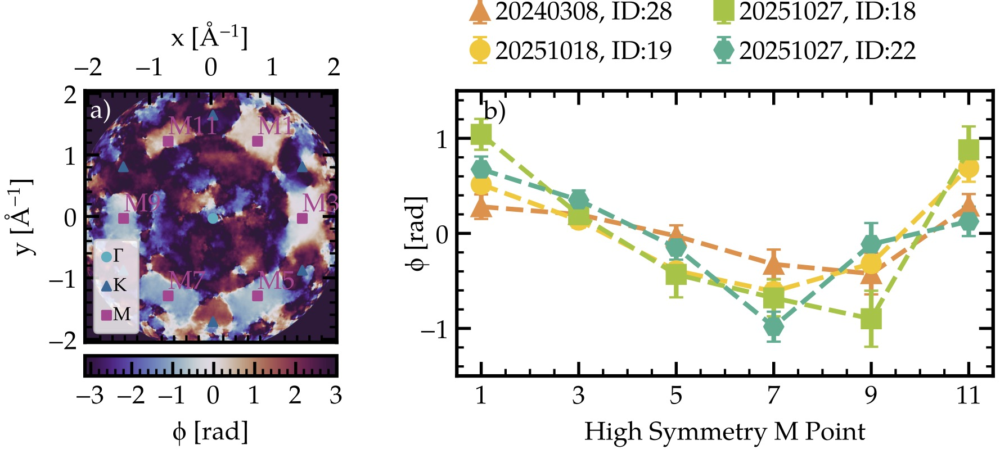

Overview
Attosecond time-resolved photoelectron emission spectroscopy in condensed matter systems opens a new pathway to study ultrafast electron dynamics and related excitation phenomena. In this work, we investigate the temporal evolution of direct photoelectron emission events originating from different regions in the valence band (VB). The main focus of this project is to establish an exploratory analysis framework with which the complete phase space measured in the experiment can be explored. The software can be used to retrieve the relative electron phase difference from the observed optical transitions to reveal the time delay between photoemission processes and related band structure phenomena.
Experimental Results
The experiments in this project were performed with a single-crystal graphite surface (SCG 0001) extracted from a natural source, specifically from meteorite flakes. The instrument used was a photoemission electron microscope (PEEM) at the NanoESCA endstation (Escher et al. (2005)) at the Extreme Light Infrastructure Attosecond Light Pulse Source (ELI-ALPS) Facility in Szeged, Hungary. An extreme ultraviolet (XUV) pump and an infrared (IR) probe beam were used in a pump-probe setup. The technique to observe photoemission processes on the attosecond timescale is known as the Reconstruction of Attosecond Beating By Inference of Two-photon Transitions (RABBITT) and was used to retrieve the phase and amplitude of the photoemitted electrons. Originally, the RABBITT technique was introduced to study the phase difference between two subsequent odd-ordered harmonic components (so-called attochirps) to characterise an attosecond pulse train. Eventually, it was established as a technique to resolve electron dynamics in the attosecond time domain by decomposing the phase information and retrieving atomic phase information (Nobel Prize in 2023, Kotur et al. (2016)). In Figure 1, a typical gas-time-of-flight beating pattern is shown consisting of a selection of main- and sidebands. The XUV beam ionises the system and excites valence electrons from the ground state into the continuum. These direct photoemission events are visible in a RABBITT spectrum as so-called mainbands, which yield the intensity distribution of the direct optical transitions. The IR dressing field induces a second transition which lets the excited electron absorb or emit an additional photon leading to a change of energy by $\pm \hbar\omega_{IR}$ giving rise to the sideband (SB) features. Essentially, this technique acts as a two quantum paths interferometer, since each considered final state or sideband can be reached by two pathways highlighted by blue and red arrows in Figure 1. These two quantum paths interfere with each other, which can be observed as a delay in the attosecond pulse train relative to the IR field. The intensity of the sidebands oscillates, which is the hallmark of the RABBITT process, with an oscillation period of $T/2$ with $T$ being the period of the fundamental laser field. In our experiment, the optical cycle of the driving laser field is 3.44 fs, therefore the RABBITT oscillation has a period of 1.72 fs. In atomic-like (gas-phase) RABBITT it is straightforward to identify SB features, albeit their analysis and interpretation can be challenging. In graphite, the situation is much more complex as seen by its complicated band structure (Simperl (2026)). Since many electrons from different occupied states can contribute to sideband features, great care is required in selecting the right set of harmonics (energies) responsible for the photoemission process. Ideally, only one distinct region (e.g., the M-point) in the band structure should lie in the same SB window to produce a RABBITT-like pattern. In our experiment we use two sets of harmonics (#51 to #59 and #31 to #39). Each measurement consists of 360 individual images, recorded at a rate of one image every 10 seconds. For the total temporal window covered by the drift, one expects to observe approximately six RABBITT oscillations.
Data Analysis Pipeline
In Figure 2 we see the data processing algorithm created to analyse the time- and momentum-resolved RABBITT measurements. The algorithm will soon be published as a GUI and Python code. It starts by importing a set of time-dependent measurements consisting of delay scans. First, a constant background from the detector is subtracted from each image. Second, a discrete convolution on each image is applied by passing a circular filter with a diameter of 100 px across the images. Third, the data is normalised according to the total field of view over all intensity values. Fourth, a second-degree polynomial is applied across each scan series to account for beam drifts and other systematic effects. Fifth, the average M-point oscillation is used to calibrate the timescale of the measurement by fitting the RABBITT function and extracting $t(x)$, a second-degree polynomial, where $x$ is the delay scan number. Last but not least, once this time function is calibrated we can fit the RABBITT function to each spot in the image extracting the relative phase at each point in momentum space. This results in a $k$-space-dependent phase map across each measurement highlighting a phase drift across different $M$ points in clockwise direction as seen in Figure 3.
Outlook
Given that opposite M-points are symmetry-equivalent, the persistence of these differences in their phase indicates a genuine physical anisotropy in the photoemission process rather than a fitting artefact or statistical fluctuation. This anisotropy reflects a momentum-dependent photoemission phase, likely arising from directional variations in the dipole matrix elements and/or final-state scattering, and demonstrates that electron emission dynamics in graphite are inherently $k$-dependent. However, additional theoretical work is required to further improve our understanding of the time-dependent photoemission process observed in this project.
Gallery



- RoleExperiment and Code Developer
- Year2024-ongoing
- ExperimentsRABBITT, NanoESCA, PEEM
- ToolsPython
- LinksThesis · Code (not yet published)